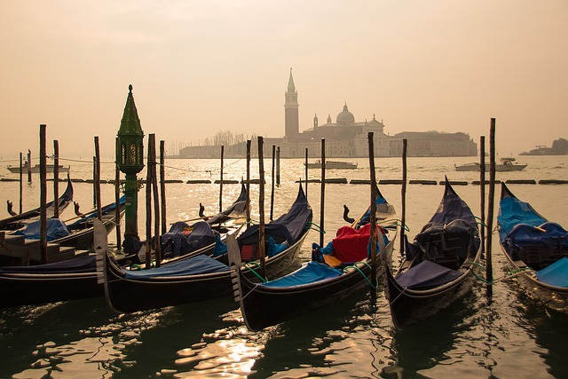
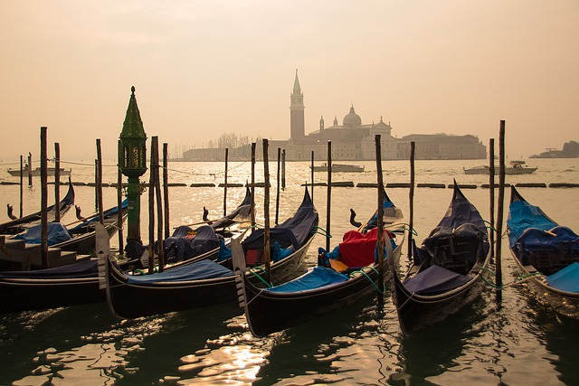

Italie
L'Italie est un pays situé dans le sud de l'Europe, avec une partie continentale et une partie insulaire composée de la Sicile et de la Sardaigne. Sa capitale est Rome, qui est également le berceau de l'Empire romain. Le pays est connu pour sa richesse historique et culturelle, notamment la Renaissance, qui a débuté au XVe siècle en Toscane.
L'Italie est divisée en 20 régions, chacune ayant sa propre spécialité culinaire et culturelle. Parmi les régions célèbres, on trouve la Toscane, la Vénétie, la Campanie et la Sicile. La langue officielle est l'italien.
Le pays est également célèbre pour ses sites touristiques, comme la Côte Amalfitaine, les Cinque Terre, Florence, Naples, Pompéi, Rome, la Sicile, Venise et Vérone. L'Italie a été fondée en 1861 après l'unification menée par Cavour et Garibaldi. Avant cela, le territoire était divisé en plusieurs états indépendants.
 


En termes de gastronomie, l'Italie est reconnue pour ses pizzas, ses pâtes et ses desserts comme le tiramisu, mais elle offre une grande variété de plats régionaux.
L'Italie est également un pays de l'art, avec de nombreux musées et galeries d'art, notamment le Vatican qui abrite plus de 100 galeries d'art et la célèbre chapelle Sixtine peinte par Michel-Ange.
Pour une visite réussie, il est recommandé de respecter les traditions locales, comme les horaires des restaurants qui peuvent varier selon les régions.
Inde
L'Inde est un pays fascinant avec de nombreuses particularités à connaître avant de partir en voyage. Voici quelques points importants : Population et langues : L'Inde est le pays le plus peuplé du monde avec plus de 1,4 milliard d'habitants. Elle compte 22 langues officielles, dont le hindi et l'anglais. Religion : Le pays est majoritairement hindou, avec près de 80 % de la population. L'hindouisme est une religion ancienne, dont les origines remontent à plus de 4 000 ans. Alimentation : Le végétarisme est courant en raison des règles alimentaires de plusieurs religions pratiquées en Inde. Les vaches sont sacrées et ne doivent pas être touchées. Culture et traditions : L'Inde est le pays où la proportion de végétariens est la plus élevée, avec 38 % de la population s'identifiant comme végétarienne. Le jeu de plateau "Serpents et échelles" est originaire de l'Inde. Patrimoine : Le Taj Mahal, l'un des sept nouvelles merveilles du monde, est un mausolée construit entre 1632 et 1653. Il a été classé au patrimoine mondial de l'UNESCO en 1983. Faune : L'Inde détient le titre de capitale mondiale du tigre, abritant 75 % des tigres du monde. Société : Les coutumes sociales en Inde peuvent différer de celles des pays occidentaux. Par exemple, il est courant de manger avec les mains, surtout dans les régions du nord. Visiteurs : En tant que touriste, vous serez souvent sollicité pour des conversations et des photos. Il est courant de dire "namaste" en joignant les mains pour saluer. Santé et sécurité : Il est essentiel de se faire vacciner contre diverses maladies tropicales avant de partir. Une assurance voyage couvrant les soins médicaux et le rapatriement est recommandée. Temporada : La meilleure période pour voyager en Inde est d'octobre à mai, bien que la température et l'humidité puissent être insupportables de mars jusqu'au début de la mousson. Ces informations vous aideront à mieux comprendre et à préparer votre voyage en Inde.
Autriche
Voici quelques informations importantes à connaître avant de voyager en Autriche : Bals Viennois : Ces événements sont une tradition culturelle majeure, attirant des milliers de participants chaque hiver à Vienne. Cependant, ils nécessitent une tenue formelle et un certain niveau de compétence en danse. Restaurants : Le pain et les amuse-gueules servis en début de repas sont facturés séparément, ce qui peut augmenter le coût total de votre repas. De plus, un pourboire est généralement attendu, bien qu'il soit parfois inclus dans le prix. Paiements : Près de 65% des transactions se font en espèces en Autriche, donc prévoyez de l'argent liquide pour vos achats. Églises : En Autriche, les citoyens paient une taxe de 1% de leurs revenus à l'Église catholique. Refuser de payer peut entraîner des conséquences, comme ne pas pouvoir être enterré dans une terre sacrée. Musique classique : Vous pouvez assister à des concerts de musique classique dans les églises pour un coût inférieur à 50 euros, voire moins de 30 euros. Supermarchés : Les supermarchés Lidl et Billa sont parmi les moins chers du pays. Ces conseils vous aideront à mieux comprendre et à vous préparer pour un voyage en Autriche.
Alpes
Les Alpes sont un système montagneux important en Europe, s'étendant sur plus de 1 200 km entre le golfe de Gênes et la plaine pannonienne. Elles sont partagées entre plusieurs pays, notamment l'Autriche, l'Italie, la France, la Suisse, l'Allemagne, la Slovénie, le Liechtenstein et Monaco. Les Alpes sont divisées en trois parties principales : les Alpes occidentales, les Alpes centrales et les Alpes orientales. Elles sont composées de roches magmatiques, métamorphiques et sédimentaires. Les Alpes ont été formées par la collision des plaques tectoniques Eurasie et Afrique, de 50 à 10 millions d'années. Les Alpes abritent de nombreux sommets de plus de 4 000 mètres, dont le plus haut est le Mont Blanc, qui atteint 4 806 mètres d'altitude. Les cols de montagne reliant les vallées ou les pays dépassent souvent les 2 000 mètres d'altitude. Les Alpes sont une destination touristique populaire, offrant des activités de plein air toute l'année, comme le ski en hiver et la randonnée en été. Les villes comme Annecy, Evian, Aix-les-Bains, Chamonix, Courchevel, Megève, Les 2 Alpes et Val Thorens attirent de nombreux visiteurs. Les Alpes font face à des problèmes environnementaux et socio-économiques, notamment le réchauffement climatique et le tourisme de masse. Pour répondre à ces défis, des conventions internationales ont été mises en place, comme la Convention sur la protection des Alpes, dite Convention alpine. Mont Blanc : Le point culminant des Alpes, atteignant 4 806 mètres d'altitude. Col des Champs : Un col routier important en France, situé à 2 045 mètres d'altitude. Vignobles savoyards : Situés entre lacs et montagne, ces vignobles bénéficient d'un microclimat unique et produisent une variété de vins. Convention alpine : Traité international visant à protéger l'environnement et à résoudre les problèmes socio-économiques des Alpes.
Grèce
Voici quelques informations importantes à connaître sur la Grèce : Langue : Le grec est la langue officielle de la Grèce, mais la plupart des jeunes Grecs connaissent également l'anglais. Capitale : Athènes est la capitale de la Grèce, elle compte aujourd'hui environ 4 millions d'habitants. Monnaie : La Grèce fait partie de l'Union Européenne et utilise l'euro comme monnaie. Culture et traditions : La Grèce est célèbre pour ses traditions culinaires, comme la feta, un fromage à base de lait de brebis et de chèvre , et l'ouzo, une boisson alcoolisée aromatisée à l'anis ou au fenouil. Sites historiques : La Grèce abrite de nombreux sites historiques, notamment l'Acropole d'Athènes, le théâtre d'Epidaure, le temple de Zeus à Olympie et le site archéologique de Delphes. Îles : Les Cyclades et les îles Ioniennes sont deux groupes d'îles populaires pour les vacances, chacun avec ses propres caractéristiques et paysages. Transport : Le bateau est un moyen de transport incontournable pour se déplacer entre les îles, et le ferry est le moyen le plus couramment utilisé. Conduite : La conduite en Grèce peut être un défi en raison des routes sinueuses et des conducteurs rapides. Ces informations vous aideront à préparer votre voyage en Grèce et à comprendre un peu mieux la culture et les coutumes du pays.
Japon
Le Japon est un pays situé dans l'Est de l'Asie, connu pour sa culture unique et innovante. Voici quelques informations importantes à connaître : Langue officielle : Le japonais est la langue officielle du pays. Monnaie : La monnaie officielle est le yen depuis 1871. Culture : La culture japonaise est marquée par des codes bien définis et respectés, axés sur l'acceptation de l'éphémère et l'excellence. Économie : Le Japon est l'un des pays les plus développés du monde, avec un IDH très élevé de 0,925 en 2021. Politique : La fête nationale du Japon est célébrée le 23 février, en commémoration de l'anniversaire de l'empereur régnant. Technologie : Bien que le Japon soit un leader technologique, il utilise encore beaucoup de systèmes traditionnels, comme le fax, et la numérisation est progressivement adoptée. Transport : Le réseau ferroviaire est très développé et efficace, et le JR Pass est une option économique pour les voyageurs. Nature : Le Japon possède des montagnes impressionnantes, dont le Mont Fuji, et un climat varié, avec des températures pouvant atteindre -30°C dans le nord en hiver. Ces points donnent un aperçu de la diversité et de la complexité du Japon, un pays qui allie tradition et modernité de manière unique.